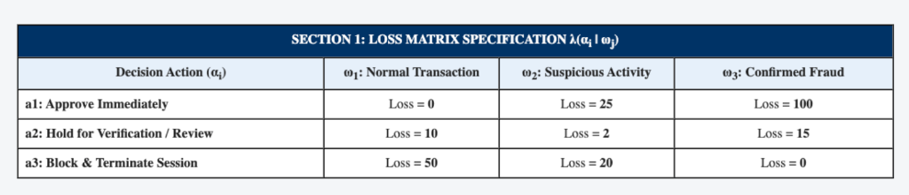
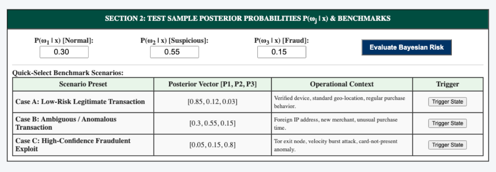
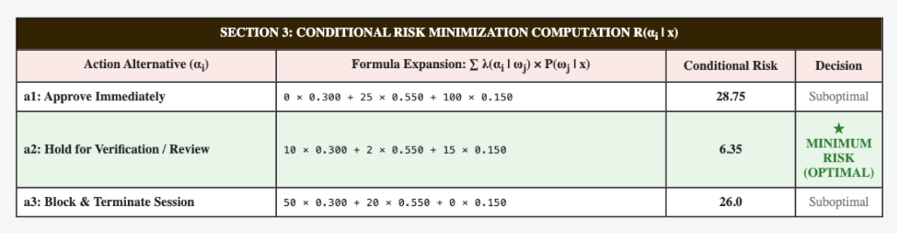
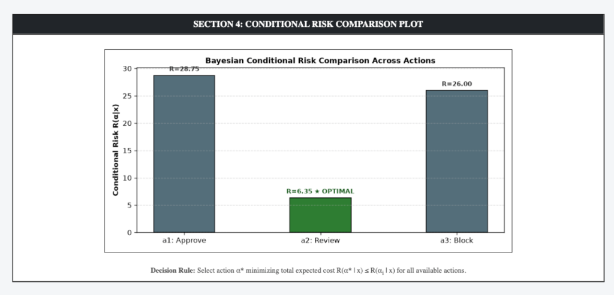

| Experiment No.: | 06 | Student Name: | Monis |
| Course / Branch: | B.Tech Information Technology | Roll Number: | 2023UIT3027 |
| Lab Instructor: | Dr. Vishal Maheshkar | Academic Session: | 2026–2027 |
Bayesian Risk Minimization for Three Classes and Three Actions Using Flask
To formulate, implement, and deploy an interactive Flask web application to perform Bayesian Risk Minimization for a pattern classification problem consisting of at least three classes (ω1, ω2, ω3) and three permissible operational actions (α1, α2, α3). Given a user-defined loss matrix, the system calculates conditional risk for each action, triggers the minimum-risk action, and reflects the decision and risk landscape dynamically in the web interface.
Bayesian Decision Theory & Risk: In real-world decision making, the costs of different errors are rarely equal (e.g., misdiagnosing a malignant disease is far more catastrophic than a false positive). Bayesian Risk Minimization incorporates asymmetric loss matrices to choose actions that minimize expected cost rather than merely misclassification rate.
Loss Matrix Λ: A formal matrix where λ(αi | ωj) defines the quantitative penalty of taking action αi when the true state of nature is ωj.
Conditional Risk R(αi | x): The expected loss incurred by deciding on action αi given feature observation x, calculated by weighting loss penalties by posterior class probabilities.
For an observation x with posterior class probabilities P(ωj | x), the conditional risk for action αi is:
The asymmetric 3×3 loss matrix penalizes misclassifications according to operational severity:
The optimal Bayesian decision selects the action that achieves the minimum conditional risk:
Interactive matrix input displaying asymmetric cost values for all 9 action-state combinations.

Dynamic controls allowing adjustment of posterior class probabilities satisfying the unit-sum constraint.

Table displaying expected losses R(alpha_i|x) for each action and highlighting the triggered optimal action.

Comparative bar plot illustrating the risk disparity between conservative, moderate, and aggressive actions.

Experiment 6 demonstrated the critical importance of Bayesian Risk Minimization in asymmetric decision environments. By incorporating non-uniform loss matrices, the application illustrated how an action associated with a lower posterior probability can be rationally chosen if alternative choices carry catastrophic error penalties, successfully operationalizing the principle of minimum expected risk.